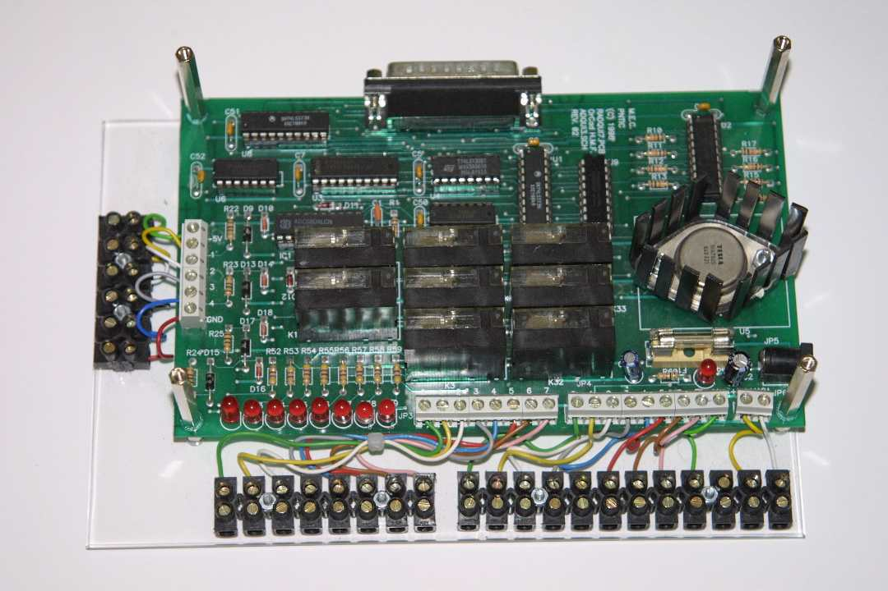
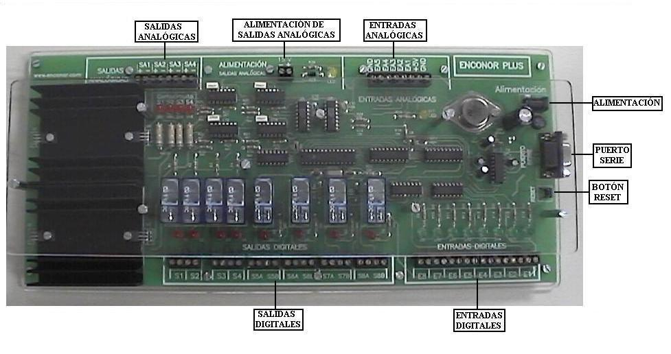

Control y robótica 4º E.S.O.
Tarjetas controladoras educativas
En el Aula de Tecnología, el objeto a controlar es una maqueta cualquiera.
Hace unos años, el interfaz que empleábamos era una tarjeta controladora didáctica, de diferentes modelos. En nuestro taller teníamos dos modelos:
Controladora CNICE

Controladora ENCONOR

El lenguaje de programación a emplear con estas tarjetas puede ser XLogo o MSWLogo